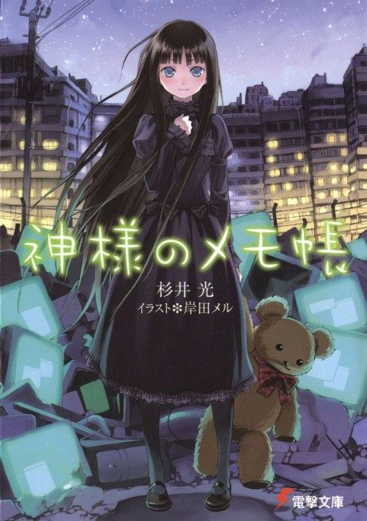

Heaven's Memo Pad
神様のメモ帳
After the anime, read the light novel from Volume 5.
7.1AniList score
—Animeter, no votes yet
12episodes
Anime finished. Where does the story go next?
Start at Volume5
The anime ends at light novel Volume 4, so continue with Volume 5, which starts a new set of cases.
149 end
Season 1Start reading here